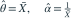
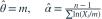
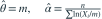
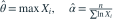
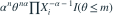
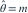
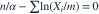

总体生存函数为  （
（ ），
）， 均未知。n 个观测不全相同，记
均未知。n 个观测不全相同，记  。MLE 组合为？
。MLE 组合为？
（）， 均未知。n 个观测不全相同，记 。MLE 组合为？- A

- B

- C

- D

我已思考，展开答案与解析
正确答案：C
- 似然为

。固定 时随
时随  增大，故取
增大，故取 
。 - 代入后对 求导，得

。
易错提醒阈值未知时需要先处理支持集，再处理光滑参数。
JYSG · 432精选 · 册内复旦大学432·2026年·九(1)；PDF第43页（印刷页41）
原大题拆解